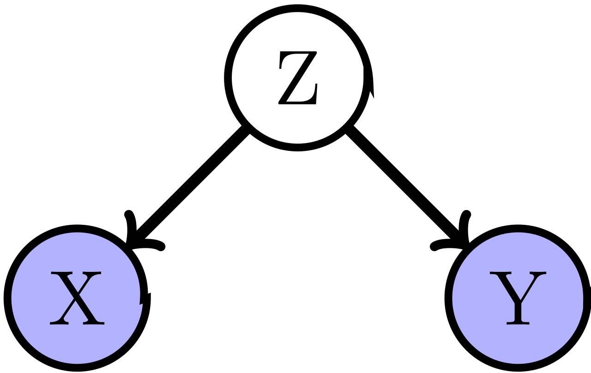
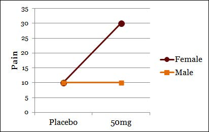
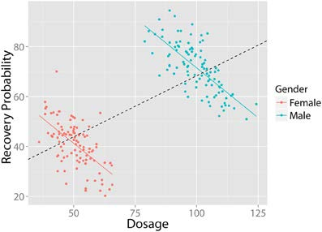
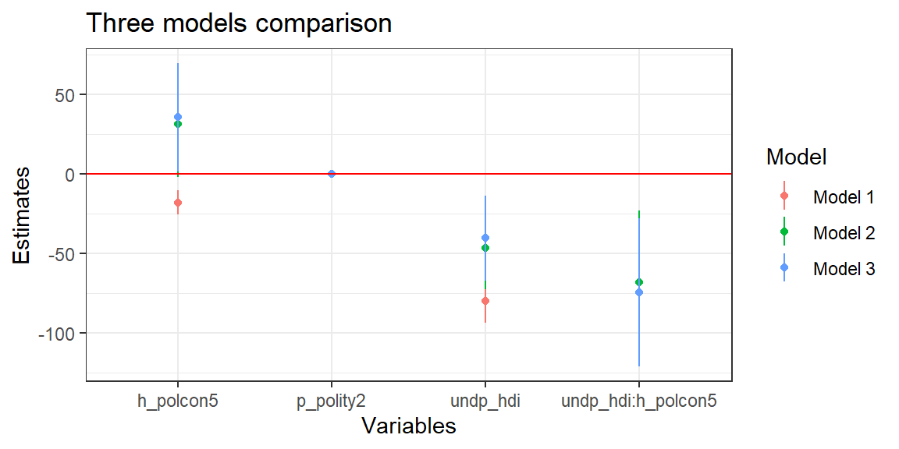
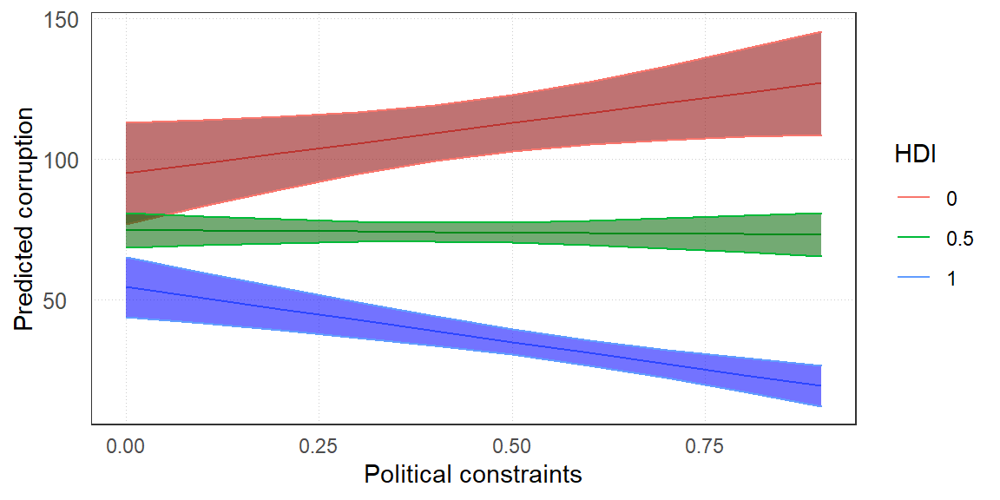

Chapter 8 Introduction to Multivariate Linear Regression Model
제6장과 제7장이 하나의 설명변수와 종속변수 간의 관계를 살펴보는 단순선형회귀모델에 초점을 맞추고 있었다면, 제8장에서는 여러 개의 설명변수와 종속변수의 관계—다변량(multivariate) 선형회귀모델, 다중회귀모델(multiple regression model)에 대해서 간단하게 발을 들여 놓아보고자 합니다. 구체적으로는 관계(association)와 인과성(causality), 관심을 가지고 있는 설명변수를 제외한 나머지 변수들의 통제(cotrolling), 그리고 다변량 관계(multivariate relationships)의 유형들에 대해 살펴보겠습니다.
8.1 관계와 인과성
앞선 장들에서는 두 변수 간의 관계를 분석하는 방법들을 주로 살펴보았습니다. 물론 양변량 관계를 분석하는 것도 여러 가지 정보들을 전달해주지만, 대개 우리는 한 가지 현상이 결코 단 하나의 원인에 의해서 발생하지 않는다는 것을 알고 있습니다. 어떻게 보면 우리가 겸험적 세계에 대해서 유일하게 확신을 가지고 말할 수 있는 사실일지도 모르겠네요. 우리는 하나의 종속변수—현상을 설명하기 위해 여러 변수들을 필요로 합니다. 그리고 여러 설명변수들을 포함하여 종속변수에 대한 영향력을 분석할 때, 개별 변수의 종속변수에 대한 효과는 양변량 분석일 때와 달라지고는 합니다.
인과성은 과학적 연구에서 핵심적인 부분입니다. 예를 들어, 우리는 바이러스에 노출되는 것이 감기에 걸리게 할 수 있다고 말하고는 합니다. 이 결과는 여러 조건들이 통제된 실험실에서 연구를 통해 드러나 우리에게 받아들여지고 있는 주장입니다. 마찬가지로 흡연이 폐암 발병의 원인이 될 수 있다는 주장도 그렇습니다. 그러나 사회적 현상을 보여주는 변수들 간에 인과적 관계가 있는지 여부를 어떻게 판단할 수 있을까요? 무엇이 청소년 비행(uvenile delinquency)의 원인이라고 말할 수 있을까요? 가난일까요? 아니면 편부모 가정인 경우에 그럴까요? 도덕적/종교적인 교육을 받지 못한 경우에 청소년들은 비행을 저지를까요? 아니면 유전적 인자의 효과일까요? 혹은 이 모든 요인들에 더해 다른 요인들의 복합적인 영향일까요?
인과성을 판단하는 데에는 세 가지 기준이 존재합니다.
- 관계(association)입니다.
- 우리는 두 변수가 관계가 있는지를 통계적으로 확인할 수 있습니다.
- 만약 변수가 분류형-명목현 변수라면 우리는 카이스퀘어 검정을 할 수 있고, 정량형 변수라면 \(t\)-검정을 할 수 있습니다.
- 그러나 관계가 있다는 것이 필연적으로 인과성을 의미하는 것은 아닙니다.
- 시간적 순차(time order)
- 시간적 순차는 내생성(endogeneity)의 문제에서 인과적 관계를 파악하는 데 도움을 줍니다.
- 예를 들어, 보이스카웃이 청소년 비행을 감소시킨다고 해보겠습니다.
- 그러나 비행 청소년들이 보이스카웃을 피하는 것일수도 있습니다.
- 두 가지 다 가능합니다. 이때, 우리는 무엇이 원인이고 무엇이 결과라고 할 수 있을까요?
- 실험연구에서 시간적 순차는 명확합니다.
- 그러나 관찰연구에서는 시간적 경향성은 존재할 수 있지만 시간적 순차에 대해서는 이론적으로 뒷받침이 되어야 합니다.
- 최초의 사회현상, 원인이라고 할 수 있는 사회현상을 관측할 수 있을까요?
- 그리고 시간적 경향성이 존재하기 때문에 과연 그 변화가 원인으로 인한 것인지 그냥 시간에 따라 변화한 것인지에 대한 고민도 필요합니다. 이혼률과 범죄율은 과거에 비해 지속적으로 증가해왔습니다. 과연 이혼률이 범죄율을 증가시킨걸까요?
- 대안적 설명의 제거(탈허위성의 문제)
- 우리는 변수들 간의 관계를 목격하고는 합니다.
- 만약 우리가 어떤 것이 변화할 때, 다른 것이 변화하고 그것들 간의 시간적 순차가 존재한다고 핟라도, 그것이 반드시 인과적 관계라고 단언할 수는 없습니다.
- 왜냐하면 만약 \(x\)와 \(y\) 모두에 영향을 미치는 제3의 변수, \(z\)가 존재할 경우에는 기존의 \(x\)와 \(y\)의 관계가 허위적(spurious)일 수 있기 때문입니다.
- 따라서 대안적 설명의 제거—\(z\)의 존재가 영향을 미치지 않는다는 것을 보여주는 것이 중요한데, 사실 이것이 가장 어렵습니다.
- 우리는 변수들 간의 인과적 관계를 찾았다고 생각할수 있지만, 단지 그것은 우리가 제3의 변수를 가진 설명을 생각해내지 못한 것일 수도 있기 때문입니다.
- 이러한 문제 때문에, 우리는 결코 어떤 변수가 다른 변수의 원인이라고 “증명”(proove)할 수는 없습니다.
- 그러나 우리는 위의 세 기준 중에서 최소한 하나에 위배되는 경험적 근거를 보여줌으로써, 인과적 가설을 반증할 수는 있습니다.
8.2 변수의 통제
우리는 “어떤 변수의 영향력이 제거되었을 때”, 그 변수가 통제되었다고 말합니다. 실험연구를 예로 들어본다면, 온도와 기압 등은 특정 수준에서 고정되어 변화하지 않습니다(holding constant). 하지만 사회과학 연구에서는 실험실처럼 고정할 수 없는 사회적 현상들을 분석대상으로 하고 있습니다. 따라서 우리는 통제하고 싶은 변수들의 값을 고정할 수는 없습니다. 그러나 대략적으로 실험연구의 통제와 비슷한 통제를 통계적으로 할 수 있는데, 바로 통제변수들에 따라 같은 값을 가지는 관측치들을 그룹화해주는 것입니다. 예를 들어, 사회적 계급이나 교육 수준, 그리고 소득 수준에 따라 관측치들을 묶어주는 것이지요. 이러한 방법을 통계적 통제라고 합니다. 정리하자면, 우리는 변수들을 특정한 값으로 변화하지 않고록 고정시킴으로써 통제합니다.
두 분류형-명목형 변수들 간의 관계를 연구할 때, 우리는 보통 통제변수—\(z\)의 수준별로 \(x\)와 \(y\)의 교차표를 분할하여 보여주고는 합니다. 예를 들어, 다시 보이스카웃과 청소년 비행과의 관계를 생각해볼 때, 제3의 변수를 교회에 다니는지 여부라고 한다면 교회에 다니는 경우와 다니지 않는 경우 보이스카웃과 청소년 비행 간의 교차표를 그려서 관계양상을 파악해보는 것입니다. 그렇다면 현실적으로 이러한 \(z\), 통제변수들을 어떻게 선택하여 모델에 투입할까요? 여기서 선행연구 검토의 중요성이 강조됩니다. 사회과학 연구에서는 기존의 이론적 연구들에서 제시되었던 설명변수들 중 내가 상정한 종속변수에 영향을 미칠 것이라고 볼 수 있는 것들을 나의 모델에 통제변수로 투입하고는 합니다. 이러한 점에서 사회과학 연구는 실험연구에 비해 통제라는 부분에서는 연구자의 재량, 이론적 검토가 크게 작용한다고 할 수도 있을 것 같습니다.
하지만 동시에 우리는 교란변수(omitted or lurkingv variable)의 가능성을 항상 생각해야 합니다. 교란항(disturbance term)이라고도 할 수 있겠는데요, 앞서 말한 것과 같이 우리가 상정한 인과적 관계를 뒤틀 수 있는 제3 변수의 가능성을 잘 살펴보지 않으면, 우리의 인과적 주장—가설은 허무하게 반증될 수 있습니다.
- 어떠한 관계를 보고하는 연구에 대해서 읽을 때, 과연 그 관계에 교란변수의 문제가 없을지 생각해보는 습관을 들일 필요가 있습니다.
- 과연 대학교 성적이 소득에 영향을 미칠까요?
- 당장 여기서만 봐도 우리는 노동 시간과 같은 다른 변수들의 효과를 생각해볼 수 있을 것입니다.
이제 다변량 관계를 한 번 살펴보겠습니다.
8.2.1 다변량 관계(Multivariate relationship)
다변량—하나의 종속변수에 대해 여러 개의 설명변수들의 관계를 살펴볼 때에는 다섯 가지 문제들을 염두에 두어야 합니다.
- 허위적 관계(Spurious associations)
- 먼저 탈허위적 관계를 간단한 그림을 통해 살펴보겠습니다. 탈허위적 관계란 우리가 설명하고 싶은 현상, 종속변수 \(y\)와 그에 영향을 미칠 주요한 설명변수 \(x\)가 모두 제3의 변수인 \(z\)에 영향을 받는 경우를 말합니다. 
- 만약 \(z\)를 통제했을 때, \(x\)와 \(y\)의 관계가 사라진다면, 우리는 기존에 우리가 상정하였던 \(x\)와 \(y\)의 관계가 인과적 관계가 아닌 허위적 관계라는 것을 알게 됩니다.
- 연쇄적 관계(Chain relationships)
- \(x_1 \rightarrow x_2 \rightarrow y\)라는 관계를 생각해보겠습니다. 이는 \(x_1\)이 \(x_2\)를 경유하여 \(y\)에 영향을 미치는 간접적인 효과를 가지고 있다는 것을 보여줍니다.
- 이때, 우리는 \(x_2\)를 매개변수(mediator) 혹은 간섭변수(intervening variable)라고 부릅니다. 이 관계에서 \(x_2\)가 통제되면 기존에 우리가 보았던 \(x_1\)과 \(y\) 간의 관계는 사라지게 될 것입니다.
- 허위적 관계와 연쇄 관계는 일견 보기에 비슷해보입니다. 둘 다 특정한 변수가 통제되었을 때, 기존에 상정한 인과적 관계가 사라지는 것을 보여줍니다. 하지만 허위적 관계에서 \(z\)는 인과적으로 \(x\)와 \(y\)에 선행되는 인자를 의미하는 것인데 반하여 연쇄적 관계에서 \(x_2\)는 \(x\)와 \(y\) 사이를 간섭하는 변수입니다.
- 다중원인(Multiple causes)
- 대부분의 종속변수들은 직접적이고 간접적인 영향력을 미치는 여러 개의 원인들을 갖습니다.
- 따라서 어떤 한 변수가 통제되었을 때, 다른 원인들의 효과—즉, 원인들과 종속변수 간의 관계가 사라지는 것이 아니라 변화할 수도 있습니다.
- 억압변수(Suppressor variables)
- 제3의 변수 \(z\)가 통제되기 전까지는 두 변수 간의 관계가 나타나지 않을 때, 우리는 \(z\)를 억압변수라고 합니다.
- 예를 들어, 교육 수준과 소득 간의 관계를 생각해보겠습니다.
- 만약 두 변수 간의 관계만 보았을 때에는 유의미한 관계가 나타나지 않았지만, 나이 변수를 통제하자 둘 간의 양의 관계가 나타났다고 해보겠습니다.
- 이때, 나이 변수는 소득에는 긍정적인 효과를 가지고 있지만 교육 수준에는 부정적인 효과를 가지고 있는 변수라고 하겠습니다.
- 왜냐하면 나이를 먹을수록 소득 수준이 더 높아질 수는 있지만 반대로 교육 수준은 낮아질 수 있기 때문입니다.
- 이 경우에 나이 변수는 교육 수준과 소득 수준의 관계에 대한 억압변수라고 할 수 있습니다.
- 이러한 잠재적인 억압변수의 가능성으로 인하여 양변량 분석이 아무 관계도 보여주지 않더라도 다른 변수들을 통제하여 관계 양상의 변화를 살펴보는 것이 좋습니다.
- 통계적 상호작용(Statistical interaction)
- \(x_1\)의 \(y\)에 대한 진정한 영향력이 \(x_2\)의 수준에 따라 다르게 나타난다면 어떻게 될까요?
- \(x_2\)의 수준이 달라질 때마다 \(x_1\)과 \(y\) 관계의 강도나 방향이 달라질 때, 우리는 통계적 상호작용의 문제를 생각해볼 수 있습니다. 
다변량 관계에서 또 유의해야할 점은 바로 심슨의 패러독스(Simpson’s paradox)와 관련되어 있습니다. 심슨의 패러독스란 한 변수를 통제한 이후에 변수들의 관계가 통제 이전과 완전히 달라지는 경우를 의미합니다.

8.3 다중선형회귀모델(Multiple linear regression model)
단순선형회귀모델(simple linear regression model)이 두 변수, \(y\)와 \(x\) 간의 양변량 관계만을 보여주었다면, 다중선형회귀모델은 하나의 종속변수, \(y\)에 대한 여러 설명변수들(\(x_1, x_2, \cdots x_i\))의 다변량 관계를 보여줍니다. 따라서 회귀식을 수리적으로 나타낸다면 \[y = \alpha + \beta_1x_1 + \beta_2x_2 + \cdots + \beta_ix_i + \epsilon\]과 같이 보여줄 수 있습니다.
다중선형회귀모델에서 설명변수들은 +로 연결되어 있습니다. 이는 논리적으로 “또는”을 의미하는 것으로, 다중선형회귀모델에서는 각 설명변수들이 서로 상관이 없다—독립적이라고 가정한다는 것을 의미합니다. 하지만 현실세계에서 우리가 확보하는 자료들이 서로 완벽하게 독립적이기는 쉽지 않습니다. 따라서 설명변수들 간의 공선성(collinearity)을 확인하는 것이 중요합니다.
설명변수가 매우 높은 상관관계를 보일 때, 우리는 변수들이 공선성을 지닌다라고 표현합니다. 공선성은 모델의 추정을 매우 복잡하게 합니다. 왜냐하면 변수들 간의 공분산이 모델에서 제외되기 때문입니다. 간단하게 말하면, 우리는 오롯한 \(x_1\)의 변화와 \(x_2\)의 변화로 \(y\)의 변화를 설명하고 싶어합니다. 그런데 \(x_1\)과 \(x_2\)의 변화가 상당 부분 겹쳐있다면, 그 겹쳐 있는 부분을 제외하고 순수한 \(x_1\)과 \(x_2\)의 변화만으로 \(y\)를 설명해야하는데, 이는 많은 관측치를 잃어버린 것과 같은 문제(small-n problem)를 야기합니다.
일반적으로 우리는 가장 간명한(parsimonious) 모델을 추구합니다. 그러나 우리는 인과적 관계의 기준 중 하나인 허위적 관계를 탐색하기 위하여 변수들을 필연적으로 모델에 더 추가해야합니다. 따라서 이와 같은 변수 추가로 인한 공선성이 일부 발생하는 것은 피할 수 없습니다.
그렇다면 어떤 변수는 모델에 넣고, 어떤 변수를 뺄 것인가—모델 선택 전략(model selection strategies)은 무엇으로 결정할까요? 앞에서도 간단히 언급하였지만, 바로 선행연구들을 바탕으로 한 이론(theory)입니다.
기본적으로 다중선형회귀모델은 \(\hat{y} = \alpha + \beta_1x_1 + \beta_2x_2 + \cdots + \beta_ix_i\)와 같은 형태로 이루어져 있습니다. 그리고 이 모델은 다음과 같은 조건들 위에 있습니다.
- 잔차는 거의 정규성을 띄어야 한다.
- 잔차는 동분산을 지녀야 한다.
- 잔차는 변수들과 독립적이어야 한다.
- 각 설명변수들은 종속변수와 선형으로 연계되어야 한다.
이 가정들은 제6장의 단순선형회귀모델에서도 살펴보았고, 추후 Lv.2.Statistics 자료에서 더 자세하게 다루겠습니다. 이제 예제 데이터를 통한 분석으로 다중선형회귀모델을 살펴보도록 하겠습니다. 우선 Quality of Government의 교차사례 자료를 불러오도록 하겠습니다. 불러온 자료는 QOG라는 객체에 저장하도록 하겠습니다.
단순선형회귀모델에서와 같이 부패지수 변수를 그 값이 클수록 부패 수준이 높은 것으로 재조작하여 사용하고자 합니다. 그리고 인간개발지수, 정치적 제약성 변수(political constraints; veto points)를 추가로 불러오겠습니다. 종속변수를 부패지수, 그리고 나머지 두 변수를 설명변수로 다중회귀분석을 수행하도록 하겠습니다.
QOG$corrupt <- 100 - QOG$ti_cpi
model1 <- lm(corrupt ~ undp_hdi + h_polcon5, data = QOG)
model1 %>% summary()##
## Call:
## lm(formula = corrupt ~ undp_hdi + h_polcon5, data = QOG)
##
## Residuals:
## Min 1Q Median 3Q Max
## -38.297 -10.552 3.105 7.909 29.414
##
## Coefficients:
## Estimate Std. Error t value Pr(>|t|)
## (Intercept) 121.548 4.658 26.097 < 2e-16 ***
## undp_hdi -80.019 6.997 -11.437 < 2e-16 ***
## h_polcon5 -18.025 3.788 -4.758 4.38e-06 ***
## ---
## Signif. codes: 0 '***' 0.001 '**' 0.01 '*' 0.05 '.' 0.1 ' ' 1
##
## Residual standard error: 12.79 on 158 degrees of freedom
## (33 observations deleted due to missingness)
## Multiple R-squared: 0.5959, Adjusted R-squared: 0.5908
## F-statistic: 116.5 on 2 and 158 DF, p-value: < 2.2e-16model 1에서 인간개발지수(HDI)와 정치적 제약(veto players) 변수의 상호작용을 포함한 model 2를 만들어보도록 하겠습니다.
##
## Call:
## lm(formula = corrupt ~ undp_hdi * h_polcon5, data = QOG)
##
## Residuals:
## Min 1Q Median 3Q Max
## -35.541 -9.606 2.689 8.180 27.590
##
## Coefficients:
## Estimate Std. Error t value Pr(>|t|)
## (Intercept) 98.62 8.92 11.056 < 2e-16 ***
## undp_hdi -46.56 13.12 -3.550 0.000508 ***
## h_polcon5 31.46 16.97 1.854 0.065652 .
## undp_hdi:h_polcon5 -68.45 22.91 -2.988 0.003264 **
## ---
## Signif. codes: 0 '***' 0.001 '**' 0.01 '*' 0.05 '.' 0.1 ' ' 1
##
## Residual standard error: 12.48 on 157 degrees of freedom
## (33 observations deleted due to missingness)
## Multiple R-squared: 0.6176, Adjusted R-squared: 0.6103
## F-statistic: 84.53 on 3 and 157 DF, p-value: < 2.2e-16model 2에다가 자유민주주의를 보여주는 새로운 변수(POLITY)를 추가하여 model 3의 분석까지 수행하겠습니다.
##
## Call:
## lm(formula = corrupt ~ undp_hdi * h_polcon5 + p_polity2, data = QOG)
##
## Residuals:
## Min 1Q Median 3Q Max
## -35.503 -7.729 2.870 8.002 26.724
##
## Coefficients:
## Estimate Std. Error t value Pr(>|t|)
## (Intercept) 95.31192 9.08428 10.492 < 2e-16 ***
## undp_hdi -40.42527 13.54667 -2.984 0.00332 **
## h_polcon5 35.59814 17.19071 2.071 0.04010 *
## p_polity2 -0.08642 0.22327 -0.387 0.69925
## undp_hdi:h_polcon5 -74.71667 23.55421 -3.172 0.00184 **
## ---
## Signif. codes: 0 '***' 0.001 '**' 0.01 '*' 0.05 '.' 0.1 ' ' 1
##
## Residual standard error: 12.48 on 149 degrees of freedom
## (40 observations deleted due to missingness)
## Multiple R-squared: 0.6202, Adjusted R-squared: 0.61
## F-statistic: 60.83 on 4 and 149 DF, p-value: < 2.2e-16자, 결과가 어떻게 나왔을까요? 결과를 확인하기 쉽게 보여주기 위해서 약간의 데이터 전처리 과정을 진행하겠습니다.
library(ggplot2)
library(tidyverse)
models <- bind_rows(
tidy.model1 <- model1 %>%
broom::tidy() %>%
bind_cols(
model1 %>% broom::confint_tidy() %>%
select(ll = conf.low, ul = conf.high)
) %>% mutate(
Model = "Model 1"
),
tidy.model2 <- model2 %>%
broom::tidy() %>%
bind_cols(
model2 %>% broom::confint_tidy() %>%
select(ll = conf.low, ul = conf.high)
) %>% mutate(
Model = "Model 2"
),
tidy.model3 <- model3 %>%
broom::tidy() %>%
bind_cols(
model3 %>% broom::confint_tidy() %>%
select(ll = conf.low, ul = conf.high)
) %>% mutate(
Model = "Model 3"
)
)
models %>% filter(term != "(Intercept)") %>%
ggplot(aes(x = term, y = estimate, color = Model)) +
geom_point() +
geom_linerange(aes(ymin = ll, ymax = ul), show.legend = NA) +
labs(x = "Variables", y = "Estimates",
title = "Three models comparison") +
geom_hline(yintercept = 0, color = "red") +
theme_bw()
절편-상수는 우리의 관심사가 아니므로, 상수를 제외한 세 모델들의 변수들의 효과를 플롯으로 나타내 보았습니다. 보시면 정치적 제약 변수가 model 1에서는 부패 지수에 부정적인 효과를 갖는 것으로 나왔는데, 다른 모델에서는 다른 양상을 보이는 것을 확인할 수 있습니다. 물론 상호작용을 해석하는 것에는 주의를 기울여야하지만, 여기서는 단지 제3의 변수에 따라서 회귀모델의 결과가 어떻게 달라질 수 있는지를 보여드리고자 합니다.
상호작용변수, 정치적 제약성의 수준이 달라질 때마다 과연 인간개발지수(undp_hdi)가 부패지수에 미치는 효과가 조건적인 변화를 보여줄까요? 이를 살펴보기 위해서 조금 다른 플롯을 그려보도록 하겠습니다.
library(effects) # 패키지를 이용해줍니다.
m3eff <- as_tibble(effect("undp_hdi:h_polcon5", model3,
xlevels = list(h_polcon5 = c(seq(0, .9, by = .1)),
undp_hdi = c(0, .5, 1)),
multiline = TRUE))
m3eff %>% ggplot(aes(x = h_polcon5, group = factor(undp_hdi),
color = factor(undp_hdi), fill = factor(undp_hdi))) +
geom_line(aes(y = fit)) +
geom_ribbon(aes(ymin = lower, ymax = upper, alpha = .2), show.legend = FALSE) +
scale_color_discrete(name = "HDI", labels=c("0", "0.5", "1")) +
scale_fill_manual(values=c("dark red", "dark green","blue")) +
xlab("Political constraints") +
ylab("Predicted corruption") +
theme_bw() +
theme(axis.text.y = element_text(hjust=0, size=rel(1.1)),
panel.grid.major.y = element_line(size=0.25, colour="grey80", linetype="dotted"),
panel.grid.major.x = element_line(size=0.25, colour="grey80", linetype="dotted"),
panel.grid.minor = element_blank(),
axis.ticks = element_blank())
자, 서로 다른 HDI는 정치적 제약 수준이 변화함에 따라 부패 지수에 대한 예측확률(predicted probability)이 다르게 나타나는 것을 확인할 수 있습니다. 예컨대, HDI 수준이 낮은 경우(hdi = 0)에는 정치적 제약 수준이 높아질수록 예측되는 부패 수준이 증가하는 것을 확인할 수 있습니다. 반대로 HDI 수준이 높은 경우(hdi = 1)에는 정치적인 제약 수준이 높아질수록 예측되는 부패의 수준이 감소하는 것을 확인할 수 있습니다. 처음에 정치적 제약 수준과 인간개발지수가 독립적이라고 가정하고 분석한 다중선형회귀모델의 결과와는 사뭇 다른 결과를 확인할 수 있습니다.
이처럼 다중선형회귀모델을 수행할 경우에는 변수들 간의 상호작용, 관계 양상의 변화 등에 주의를 기울여 연구자 본인이 주장하는 인과적 설명이 얼마나 타당한지 확인해야 합니다.